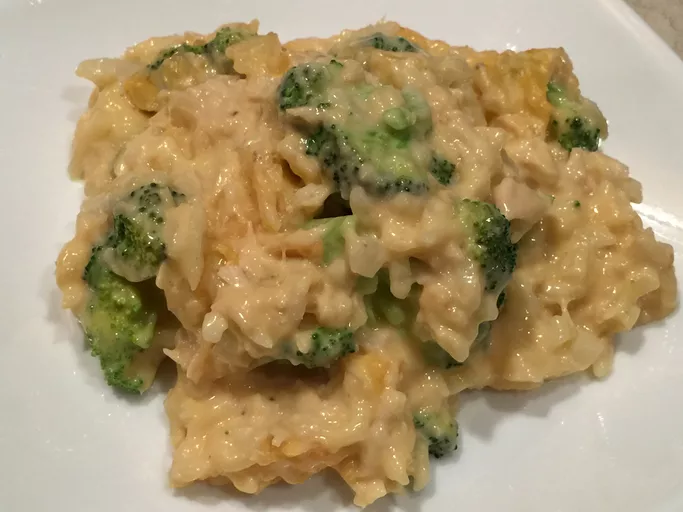

Home
Chicken and Rice

Description
A creamy dish of seasoned chicken, steamed brccoli and cheese rice. This recipe is great for weeknight dinners because it is filling, uses only one pan and comes together in minutes.
Instead of brccoli other vegetables like asparagus or spinach can be substitued for prefrences and just to mix up the classic variation. This dish is a great addition to any weekly meal rotation.
Ingredients:
- Chicken
- Broccoli
- Rice
- Cheese
- Milk
- Chicken Broth
- Salt
- Pepper
- Preheat pan to medium high heat.
- Season chicken and cook in pan for 5 minutes on each side.
- Add chicken broth to pan and stir in rice.
- Add broccoli to pan, do not stir in.
- Cover pan and cook for 18 minutes.
- Remove chicken from pan and shred.
- Add cheese and milk to rice and boccoli. Stir until well combined.
- Add shredded chicken bak to pan.
- Season with salt and pepper to taste and serve.